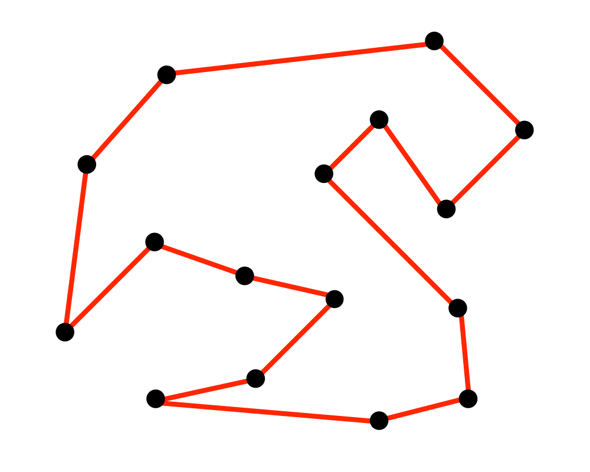

Quantum Traveling Salesman

Filip Mazurek
Introduction
This notebook will go over the basics of solving the traveling salesman problem (TSP) using QAOA. While not everything will be covered here, the complete code can be found on my GitHub and the original can be found on the original author’s Jupyter Notebook.
The aim of the code written for this notebook was to extend the original work done for it. Namely, the algorithm was redone using the Qiskit library. Furthermore, I added more code to test the efficacy of the chosen Hamiltonians, including testing whether a valid city order was chosen even in the absence of visitation distance constraints. While I failed to find a more optimal Hamiltonian, this provides a base for further investigation.
This notebook will have three sections: the first will quickly give an overview of solving the traveling salesman problem using QAOA, the second will explicitly show the problem of having correct outputs, and then the third will be a link to my GitHub with the descriptions of all the extensions that were done from the original Jupyter Notebook.
Traveling Salesman Problem
This TSP that we are solving will be formulated as a collection of $n$ number of coordinate points on a 2D plane. The goal is to find a path which visits all coordinate points and returns to the starting point while minimizing the total distance traveled.

QAOA
One quantum strategy to solve the TSP is to use QAOA. To do so, we have to decide on a cost Hamiltonian and a mixing Hamiltonian, where the cost Hamiltonian is the cost function for the whole problem.
Encoding the Problem
So now there’s the problem of how to translate the TSP in such a way that we can use QAOA to solve it. For example, consider that we have four cities and we want to find an ordering of them. Of course for an ordering of 0 -> 1 -> 3 -> 2 , we can use a Python array of [0,1,3,2].
One way which we can encode this sort of information on a quantum computer is to consider $n^2$ qubits, where $n$ is the number of cities in the TSP. Since there are $n$ cities, there are $n$ time units taken to visit all of them. Therefore we construct the first $n$ qubits to be the first time step, the second $n$ qubits to be the second time step, etc. Within each time step, the one qubit which is a $|1\rangle$ is the “city” which is visited. All other qubit values should be $|0\rangle$, to indicate that they are not being visited.
This means that our above example of [0, 1, 3, 2] will be encoded using qubits as
$\begin{bmatrix}
1 & 0 & 0 & 0 \\
0 & 1 & 0 & 0 \\
0 & 0 & 0 & 1 \\
0 & 0 & 1 & 0 \\
\end{bmatrix}$
Which translates into the following string of qubits:
[1,0,0,0, 0,1,0,0, 0,0,0,1, 0,0,1,0]
Now the first part of the problem is that we want to make sure that the cities are able to be listed out in an order that makes sense, since this by itself is not trivial.
Solving the Two City Case
Say that we only have two cities. Following from our qubit descriptions above, this means that our program will use four qubits, and the only two possible results should be [0,1, 1,0] and [1,0, 0,1]. These two cases represent first visiting city 0 then 1, the second case being first visiting city 1 then 0.
To achieve just this, we need to build a cost Hamiltonian. This Hamiltonian will need to achieve two things: penalize if a city is visited more than once and penalize if more than one city is visited in the same time step. At the same time, we need to make sure that one city is visited during a time step.
Let’s call the cities city A and city B, to make it easier to talk about them. The two city case therefore uses four qubits, numbered 0 to 3: Qubit 0 is city A at time = 0 Qubit 1 is city B at time = 0 Qubit 2 is city A at time = 1 Qubit 3 is city B at time = 1
Then we construct the cost Hamiltonian by creating penalty terms between impossible situations. First, we add penalties for visiting the same city multiple times. So we add penalty terms between qubits 0 and 2, and between 1 and 3. Let’s build this using the matrix visualization utility. All the following can be found in the matrix visualization project section of the page.
Note that the qubit ordering here is left to right.
from numpy import kron as k
from numpy import subtract as sub
from numpy import add
from numpy import array
import numpy as np
pauli_Z = array([[1, 0], [0, -1]])
identity = array([[1, 0], [0, 1]])
Z = pauli_Z
I = identity
z0 = k(k(k(Z, I), I), I)
z1 = k(k(k(I, Z), I), I)
z2 = k(k(k(I, I), Z), I)
z3 = k(k(k(I, I), I), Z)
I4 = k(k(k(I, I), I), I)
def create_penalty_for_range_02():
weight = -100
z_term = z0 * -100
all_ones_term = sub(I4 * -50, z0 * -50)
z_term = z_term.dot(z2)
all_ones_term = all_ones_term.dot(sub((I4 * .5), (z2 * .5)))
cost_op = sub(sub(I4 * -100, z_term), all_ones_term)
# print(cost_op)
return cost_op
def create_penalty_for_range_13():
weight = -100
z_term = z1 * -100
all_ones_term = sub(I4 * -50, z1 * -50)
z_term = z_term.dot(z3)
all_ones_term = all_ones_term.dot(sub((I4 * .5), (z3 * .5)))
cost_op = sub(sub(I4 * -100, z_term), all_ones_term)
# print(cost_op)
return cost_op
Then we do the same for visiting multiple cities in the same time step. So we add a penalty for between qubits 0 and 1 and between qubits 2 and 3.
def create_penalty_for_range_01():
weight = -100
z_term = z0 * -100
all_ones_term = sub(I4 * -50, z0 * -50)
z_term = z_term.dot(z1)
all_ones_term = all_ones_term.dot(sub((I4 * .5), (z1 * .5)))
cost_op = sub(sub(I4 * -100, z_term), all_ones_term)
# print(cost_op)
return cost_op
def create_penalty_for_range_23():
weight = -100
z_term = z2 * -100
all_ones_term = sub(I4 * -50, z2 * -50)
z_term = z_term.dot(z3)
all_ones_term = all_ones_term.dot(sub((I4 * .5), (z3 * .5)))
cost_op = sub(sub(I4 * -100, z_term), all_ones_term)
# print(cost_op)
return cost_op
Now we can add up all these penalty terms to find the part of the cost Hamiltonian which focuses on visiting valid cities.
same_city_penalty = add(add(add(create_penalty_for_range_02(),
create_penalty_for_range_13()),
create_penalty_for_range_01()),
create_penalty_for_range_23())
print(same_city_penalty)
[[ 0. 0. 0. 0. 0. 0. 0. 0. 0. 0. 0. 0.
0. 0. 0. 0.]
[ 0. -400. 0. 0. 0. 0. 0. 0. 0. 0. 0. 0.
0. 0. 0. 0.]
[ 0. 0. -400. 0. 0. 0. 0. 0. 0. 0. 0. 0.
0. 0. 0. 0.]
[ 0. 0. 0. -300. 0. 0. 0. 0. 0. 0. 0. 0.
0. 0. 0. 0.]
[ 0. 0. 0. 0. -400. 0. 0. 0. 0. 0. 0. 0.
0. 0. 0. 0.]
[ 0. 0. 0. 0. 0. -300. 0. 0. 0. 0. 0. 0.
0. 0. 0. 0.]
[ 0. 0. 0. 0. 0. 0. -800. 0. 0. 0. 0. 0.
0. 0. 0. 0.]
[ 0. 0. 0. 0. 0. 0. 0. -200. 0. 0. 0. 0.
0. 0. 0. 0.]
[ 0. 0. 0. 0. 0. 0. 0. 0. -400. 0. 0. 0.
0. 0. 0. 0.]
[ 0. 0. 0. 0. 0. 0. 0. 0. 0. -800. 0. 0.
0. 0. 0. 0.]
[ 0. 0. 0. 0. 0. 0. 0. 0. 0. 0. -300. 0.
0. 0. 0. 0.]
[ 0. 0. 0. 0. 0. 0. 0. 0. 0. 0. 0. -200.
0. 0. 0. 0.]
[ 0. 0. 0. 0. 0. 0. 0. 0. 0. 0. 0. 0.
-300. 0. 0. 0.]
[ 0. 0. 0. 0. 0. 0. 0. 0. 0. 0. 0. 0.
0. -200. 0. 0.]
[ 0. 0. 0. 0. 0. 0. 0. 0. 0. 0. 0. 0.
0. 0. -200. 0.]
[ 0. 0. 0. 0. 0. 0. 0. 0. 0. 0. 0. 0.
0. 0. 0. 400.]]
Running on a Quantum Computer
Now we can take this simplest case and run it as a QAOA problem. Note that the code added here is a subset of the full algorithm on my GitHub. We’ll first run the code on a two-city example to show off performance and accuracy. The below is written as a Qiskit implementation partly using Qiskit Aqua’s tsp library. However, this code takes a long time to the beta and gamma angle parameters. The code which this is based on can be found as part of a quantum machine learning course offered by edX – the code is on GitHub.
import warnings
warnings.filterwarnings('ignore')
from qiskit.quantum_info import Pauli
from qiskit.aqua import Operator
import numpy as np
from functools import partial, reduce
from qiskit.aqua.components.initial_states import Custom
from qiskit import QuantumRegister, Aer, BasicAer, execute
from scipy.optimize import minimize
from qiskit.aqua.translators.ising import tsp
from results_visualization import list_to_easier_vis
np.set_printoptions(precision=3, suppress=True)
def pauli_i(coeff, n_q):
id_pauli = Pauli(np.zeros(n_q), np.zeros(n_q))
return Operator([[coeff, id_pauli]])
def pauli_x(qubit, coeff, n_q):
eye = np.eye(n_q)
return Operator([[coeff, Pauli(np.zeros(n_q), eye[qubit])]])
def pauli_z(qubit, coeff, n_q):
eye = np.eye(n_q)
return Operator([[coeff, Pauli(eye[qubit], np.zeros(n_q))]])
def product_pauli_z(q1, q2, coeff, n_q):
eye = np.eye(n_q)
return Operator([[coeff, Pauli(eye[q1], np.zeros(n_q)) * Pauli(eye[q2], np.zeros(n_q))]])
def evolve(hamiltonian, angle, quantum_registers):
return hamiltonian.evolve(None, angle, 'circuit', 1,
quantum_registers=quantum_registers,
expansion_mode='suzuki',
expansion_order=3)
def create_circuit(qr, gamma, beta, p, m_H, c_H, init_circ):
circuit_evolv = reduce(lambda x, y: x + y, [evolve(m_H, beta[i], qr) + evolve(c_H, gamma[i], qr)
for i in range(p)])
circuit = init_circ + circuit_evolv
return circuit
def neg_evaluate_circuit(gamma_beta, qr, p, m_H, c_H, init_circ):
n = len(gamma_beta)//2
circuit = create_circuit(qr, gamma_beta[:n], gamma_beta[n:], p, m_H=m_H, c_H=c_H, init_circ=init_circ)
return np.real(c_H.eval("matrix", circuit, Aer.get_backend('statevector_simulator'))[0])
def create_weights_cost_operators(num_cities, num_qubits, dist_mat):
cost_operator = None
for i in range(num_cities):
for j in range(i, num_cities):
for t in range(num_cities - 1):
weight = dist_mat[i][j] / 2
if dist_mat[i][j] != 0:
qubit_1 = t * num_cities + i
qubit_2 = (t + 1) * num_cities + j
if cost_operator is None:
cost_operator = pauli_i(weight, num_qubits) - \
product_pauli_z(qubit_1, qubit_2, weight, num_qubits)
else:
cost_operator += pauli_i(weight, num_qubits) - \
product_pauli_z(qubit_1, qubit_2, weight, num_qubits)
return cost_operator
def create_penalty_operators_for_bilocation(num_cities, distance_mat, num_qubits):
# TODO: big problems here. It likes position 1010 WAAY too much (= 0.88) (in two city case)
penalty_operators = None
for t in range(num_cities): # adding penalty for being in multiple cities at the same time point
range_of_qubits = list(range(t * num_cities, (t + 1) * num_cities))
print(range_of_qubits)
if penalty_operators is None:
penalty_operators = create_penalty_operators_for_qubit_range(range_of_qubits, distance_mat, num_qubits)
else:
penalty_operators += create_penalty_operators_for_qubit_range(range_of_qubits, distance_mat, num_qubits)
return penalty_operators
def create_penalty_operators_for_repetition(num_cities, distance_mat, num_qubits):
# TODO: big problems here. It likes position 1100 WAAY too much (= 0.88) (in two city case)
penalty_operators = None
for i in range(num_cities): # add penalty for visiting the same city more than once
range_of_qubits = list(range(i, num_cities ** 2, num_cities))
print(range_of_qubits)
if penalty_operators is None:
penalty_operators = create_penalty_operators_for_qubit_range(range_of_qubits, distance_mat, num_qubits)
else:
penalty_operators += create_penalty_operators_for_qubit_range(range_of_qubits, distance_mat, num_qubits)
return penalty_operators
def create_penalty_operators_for_qubit_range(range_of_qubits, dist_mat, n_q):
penalty_weight = 100 * np.max(dist_mat)
cost_operators = None
for i in range_of_qubits:
if i == range_of_qubits[0]:
z_term = pauli_z(qubit=i, coeff=penalty_weight, n_q=n_q)
all_ones_term = pauli_i(coeff=.5 * penalty_weight, n_q=n_q) - pauli_z(qubit=i, coeff=0.5 * penalty_weight, n_q=n_q)
else:
z_term = z_term * pauli_z(qubit=i, coeff=1, n_q=n_q)
all_ones_term = all_ones_term * (pauli_i(coeff=.5, n_q=n_q) - pauli_z(qubit=i, coeff=0.5, n_q=n_q))
if cost_operators is None:
cost_operators = pauli_i(penalty_weight, n_q) - z_term - all_ones_term
else:
cost_operators += pauli_i(penalty_weight, n_q) - z_term - all_ones_term
return cost_operators
def main(run_mode):
# graph of city coordinates
cities = np.array([[0, 0], [0, 1]]) # coordinates of the cities
num_cities = len(cities)
num_qubits = num_cities ** 2
# algorithm properties
p = 2 # number of time steps
beta = np.random.uniform(0, np.pi * 2, p)
gamma = np.random.uniform(0, np.pi * 2, p)
# create matrix of distances between cities
distance_mat = tsp.calc_distance(cities).w # note that this method does integer distances
# create mixing Hamiltonian. A city may or may not be visited in a timestep
mixing_hamiltonian = reduce(lambda x, y: x + y,
[pauli_x(i, 1, num_qubits) for i in range(num_qubits)])
# penalty_operators = create_weights_cost_operators(num_cities=num_cities, num_qubits=num_qubits,
# dist_mat=distance_mat)
penalty_operators = create_penalty_operators_for_bilocation(num_qubits=num_qubits, num_cities=num_cities,
distance_mat=distance_mat)
penalty_operators += create_penalty_operators_for_repetition(num_qubits=num_qubits, num_cities=num_cities,
distance_mat=distance_mat)
print(penalty_operators)
cost_hamiltonian = penalty_operators
# circuit initial state vector. All states in equal superposition
init_state_vect = [1 for i in range(2 ** num_qubits)]
init_state = Custom(num_qubits, state_vector=init_state_vect)
# initialize quantum circuit
qr = QuantumRegister(num_qubits, name='q')
init_circ = init_state.construct_circuit('circuit', qr)
# find optimal beta and gamma
evaluate = partial(neg_evaluate_circuit, qr=qr, p=p, m_H=mixing_hamiltonian, c_H=cost_hamiltonian,
init_circ=init_circ)
print("Looking for optimal beta and gamma")
# TODO: maybe we should use a different or faster method of finding the min? Super long even with two cities
result = minimize(evaluate, np.concatenate([gamma, beta]), method='L-BFGS-B')
# result = minimize(evaluate, np.concatenate([gamma, beta]))
print(result)
# now use the result of the gathered angles to find the answer
circuit = create_circuit(qr, result['x'][:p], result['x'][p:], p, m_H=mixing_hamiltonian, c_H=cost_hamiltonian,
init_circ=init_circ)
if run_mode == "IBM quantum":
import secrets
from qiskit import IBMQ
from qiskit.providers.ibmq import least_busy
provider = IBMQ.enable_account(secrets.IBM_TOKEN)
large_enough_devices = provider.backends(filters=lambda x: x.configuration().n_qubits > 4 and
not x.configuration().simulator)
backend = least_busy(large_enough_devices)
print("This will be running on the IBM device " + backend.name())
else:
print("Preparing to run on local simulator")
backend = BasicAer.get_backend('statevector_simulator')
job = execute(circuit, backend)
state = np.asarray(job.result().get_statevector(circuit))
print(list_to_easier_vis(np.absolute(state)))
main(run_mode="sim")
[0, 1]
[2, 3]
[0, 2]
[1, 3]
Representation: paulis, qubits: 4, size: 9
Looking for optimal beta and gamma
fun: 244.8597191241482
hess_inv: <4x4 LbfgsInvHessProduct with dtype=float64>
jac: array([-0.014, 0. , -0. , -0. ])
message: b'CONVERGENCE: REL_REDUCTION_OF_F_<=_FACTR*EPSMCH'
nfev: 150
nit: 19
status: 0
success: True
x: array([4.081, 1.9 , 4.35 , 0.398])
Preparing to run on local simulator
{'0000': 0.5074293080932455, '0001': 0.08389827713721104, '0010': 0.12487737720594391, '0011': 0.25253594977274596, '0100': 0.12487737720594448, '0101': 0.25253594977274696, '0110': 0.11649122579589484, '0111': 0.08389827713721305, '1000': 0.18889230462758796, '1001': 0.11649122579589463, '1010': 0.3020975725542607, '1011': 0.1248773772059434, '1100': 0.30209757255425984, '1101': 0.1248773772059429, '1110': 0.18889230462758663, '1111': 0.5074293080932352}
Interpreting the Results
Now we can take a look at the printed results of the Qiskit QAOA results. The dictionary of results is presented as a list of coefficients for the complete wavefunction. Meaning that the actual probability of each result is the coefficient squared.
Unfortunately, it looks like our Hamiltonians may be inadequate. Recall that the only “valid” results that we are looking for are 0110 and 1001. But those results are not even close to being the most prevalent. These results warrant further steps into investigating where the issues are. I’m betting that the Hamiltonians can be constructed better.
But rather than hunting for errors, let’s take a look at another example. This code comes from Michał Stęchny, and it served as an inspiration for me to redo his project in Qiskit with a slightly different take.
Another Example
Here’s another example which uses Rigetti’s libraries to solve the same problem. We run the problem with only two cities. Let’s run this and take a look at the results.
"""
Written by Michał Stęchny. https://github.com/mstechly
Adapted by Filip Mazurek
"""
import numpy as np
from grove.pyqaoa.qaoa import QAOA
from pyquil import get_qc
import scipy
from pyquil.paulis import PauliTerm, PauliSum
from rigetti_result_analysis import error_binary_state_to_points_order
from forest_utils_ms import *
class ForestTSPSolver(object):
def __init__(self, distance_matrix, steps=1, ftol=1.0e-2, xtol=1.0e-2, use_constraints=False,
add_weight_constraints=True):
self.distance_matrix = distance_matrix
self.number_of_qubits = self.get_number_of_qubits()
self.qvm = get_qc(str(self.number_of_qubits) + "q-qvm")
self.steps = steps
self.ftol = ftol
self.xtol = xtol
self.betas = None
self.gammas = None
self.qaoa_inst = None
self.solution = None
self.naive_distribution = None
self.most_frequent_string = None
self.sampling_results = None
self.use_constraints = use_constraints
self.add_weight_constraints = add_weight_constraints
self.sensible_distribution = None
cost_operators = self.create_cost_operators()
driver_operators = self.create_driver_operators()
minimizer_kwargs = {'method': 'Nelder-Mead',
'options': {'ftol': self.ftol, 'xtol': self.xtol,
'disp': False}}
# vqe_option = {'disp': print_fun, 'return_all': True,
# 'samples': None}
qubits = list(range(self.number_of_qubits))
self.qaoa_inst = QAOA(self.qvm, qubits, steps=self.steps, cost_ham=cost_operators, ref_ham=driver_operators,
store_basis=True, minimizer=scipy.optimize.minimize, minimizer_kwargs=minimizer_kwargs,
# vqe_options=vqe_option
)
def solve_tsp(self):
"""
Calculates the optimal angles (betas and gammas) for the QAOA algorithm
and returns a list containing the order of nodes.
"""
self.find_angles()
self.calculate_solution()
return self.solution, self.naive_distribution
def find_angles(self):
"""
Runs the QAOA algorithm for finding the optimal angles.
"""
self.betas, self.gammas = self.qaoa_inst.get_angles()
print("betas: ", self.betas)
print("gammas: ", self.gammas)
return self.betas, self.gammas
def calculate_solution(self):
"""
Samples the QVM for the results of the algorithm
and returns a list containing the order of nodes.
"""
most_frequent_string, sampling_results = self.qaoa_inst.get_string(self.betas, self.gammas, samples=10000)
self.most_frequent_string = most_frequent_string
self.sampling_results = sampling_results
self.solution = binary_state_to_points_order(most_frequent_string)
print() # uncomment to show raw sampling results
print("Raw sampling results: ")
print(sampling_results)
all_solutions = sampling_results.keys()
naive_distribution = {}
for sol in all_solutions:
points_order_solution = error_binary_state_to_points_order(sol)
# the following is only true during error conditions of qubits
if tuple(points_order_solution) in naive_distribution.keys():
naive_distribution[tuple(points_order_solution)] += sampling_results[sol]
else:
naive_distribution[tuple(points_order_solution)] = sampling_results[sol]
# TODO: make use of sensible_distribution as well as naive
self.naive_distribution = naive_distribution
def create_cost_operators(self):
cost_operators = []
if self.add_weight_constraints:
cost_operators += self.create_weights_cost_operators()
if self.use_constraints:
cost_operators += self.create_penalty_operators_for_bilocation()
cost_operators += self.create_penalty_operators_for_repetition()
return cost_operators
def create_penalty_operators_for_bilocation(self):
# Additional cost for visiting more than one node in given time t
cost_operators = []
number_of_nodes = len(self.distance_matrix)
for t in range(number_of_nodes):
range_of_qubits = list(range(t * number_of_nodes, (t + 1) * number_of_nodes))
cost_operators += self.create_penalty_operators_for_qubit_range(range_of_qubits)
# print()
# print("Cost operators for bilocation: ")
# print(cost_operators) # uncomment to see cost operator
return cost_operators
def create_penalty_operators_for_repetition(self):
# Additional cost for visiting given node more than one time
cost_operators = []
number_of_nodes = len(self.distance_matrix)
for i in range(number_of_nodes):
range_of_qubits = list(range(i, number_of_nodes ** 2, number_of_nodes))
cost_operators += self.create_penalty_operators_for_qubit_range(range_of_qubits)
# print() # uncomment to see cost operator
# print("Cost operators for repetition: ")
# print(cost_operators)
return cost_operators
def create_penalty_operators_for_qubit_range(self, range_of_qubits):
cost_operators = []
weight = -100 * np.max(self.distance_matrix)
for i in range_of_qubits:
if i == range_of_qubits[0]:
z_term = PauliTerm("Z", i, weight)
all_ones_term = PauliTerm("I", 0, 0.5 * weight) - PauliTerm("Z", i, 0.5 * weight)
else:
z_term = z_term * PauliTerm("Z", i)
all_ones_term = all_ones_term * (PauliTerm("I", 0, 0.5) - PauliTerm("Z", i, 0.5))
z_term = PauliSum([z_term])
cost_operators.append(PauliTerm("I", 0, weight) - z_term - all_ones_term)
return cost_operators
def create_weights_cost_operators(self):
cost_operators = []
number_of_nodes = len(self.distance_matrix)
for i in range(number_of_nodes):
for j in range(i, number_of_nodes):
for t in range(number_of_nodes - 1):
weight = -self.distance_matrix[i][j] / 2
if self.distance_matrix[i][j] != 0:
qubit_1 = t * number_of_nodes + i
qubit_2 = (t + 1) * number_of_nodes + j
cost_operators.append(
PauliTerm("I", 0, weight) - PauliTerm("Z", qubit_1, weight) * PauliTerm("Z", qubit_2))
return cost_operators
def create_driver_operators(self):
driver_operators = []
for i in range(self.number_of_qubits):
driver_operators.append(PauliSum([PauliTerm("X", i, -1.0)]))
return driver_operators
def get_number_of_qubits(self):
return len(self.distance_matrix) ** 2
def print_fun(x):
# print(x)
pass
cities = [[0, 0], [0, 1]]
distance_matrix = get_distance_matrix(cities)
solver = ForestTSPSolver(distance_matrix, steps=2, ftol=1.0e-2, xtol=1.0e-2, use_constraints=True,
add_weight_constraints=False)
sol, dist = solver.solve_tsp()
print()
print(sol)
print()
print(dist)
WARNING: Fast method for expectation will be used. Noise
models will be ineffective
betas: [1.83163777 2.15788585]
gammas: [6.16385162 5.25559322]
Raw sampling results:
Counter({(1, 0, 0, 1): 3742, (0, 1, 1, 0): 3594, (0, 0, 0, 0): 625, (1, 1, 1, 1): 407, (0, 0, 1, 0): 309, (1, 0, 0, 0): 297, (0, 1, 0, 0): 297, (0, 0, 0, 1): 280, (1, 1, 0, 0): 112, (0, 0, 1, 1): 94, (1, 0, 1, 0): 88, (0, 1, 0, 1): 87, (1, 0, 1, 1): 22, (0, 1, 1, 1): 16, (1, 1, 0, 1): 15, (1, 1, 1, 0): 15})
[0, 1]
{(-1,): 2489, (1, 0): 3594, (0, 1): 3742, (1, 1): 87, (0, 0): 88}
Now here are some pretty interesting results. And slightly disheartening as well. First, let’s take a look at the raw sampling results. While the two valid results come up as the most prevalent solutions, the margin between them and the rest of the possible results is not that great. Especially considering that this is only for the case with two cities.
When we take a look at the last line, all nonsensical results were classified into the (-1,) label. These include all the cases when more than one city is visited at one time, as well as when no cities are visited at any time point. As can be seen, these nonsensical results make up more than a third of the possible results.
However! Take solace in the fact that we were able to get possible results in the first place – and from a quantum computer no less! For this specific problem, further time and research will need to be dedicated to find better ways to run this solver.
Conclusions
Hopefully the above was instructive in a more “practical” problem solution for quantum computers. I hope to be able to improve both the Qiskit and PyQuil versions by doing a more in-depth analysis of the runtimes and analyze the circuit models of both approaches.
For the curious, below is the PyQuil version of the code finding arrangements of three cities. This uses 9 qubits and takes significantly longer to run (around 10 minutes). Check out the results below.
cities = [[0, 0], [0, 1], [1, 1]]
distance_matrix = get_distance_matrix(cities)
solver = ForestTSPSolver(distance_matrix, steps=2, ftol=1.0e-2, xtol=1.0e-2, use_constraints=True,
add_weight_constraints=False)
sol, dist = solver.solve_tsp()
print()
print(sol)
print()
print(dist)
WARNING: Fast method for expectation will be used. Noise
models will be ineffective
betas: [2.05006381 2.99135792]
gammas: [1.35174587 5.73163097]
Raw sampling results:
Counter({(0, 1, 0, 0, 0, 1, 1, 0, 0): 301, (0, 1, 0, 1, 0, 0, 0, 0, 1): 299, (1, 0, 0, 0, 1, 0, 0, 0, 1): 293, (1, 0, 0, 0, 0, 1, 0, 1, 0): 290, (0, 0, 1, 1, 0, 0, 0, 1, 0): 289, (0, 0, 1, 0, 1, 0, 1, 0, 0): 288, (1, 1, 1, 1, 1, 1, 1, 1, 1): 269, (1, 0, 0, 1, 0, 0, 0, 1, 1): 117, (1, 0, 0, 0, 1, 1, 1, 0, 0): 116, (1, 0, 1, 0, 1, 0, 0, 1, 0): 104, (0, 1, 1, 1, 0, 0, 1, 0, 0): 96, (0, 0, 1, 0, 0, 1, 1, 1, 0): 96, (1, 1, 1, 0, 0, 0, 1, 1, 1): 95, (0, 1, 0, 1, 0, 1, 0, 1, 0): 95, (1, 1, 0, 0, 0, 1, 0, 0, 1): 94, (0, 0, 1, 1, 1, 0, 0, 0, 1): 94, (0, 1, 1, 0, 1, 1, 0, 1, 1): 92, (0, 1, 0, 0, 1, 0, 1, 0, 1): 91, (1, 1, 1, 1, 1, 1, 0, 0, 0): 89, (1, 1, 0, 1, 1, 0, 1, 1, 0): 88, (0, 0, 0, 1, 1, 1, 1, 1, 1): 87, (1, 0, 1, 1, 0, 1, 1, 0, 1): 86, (0, 0, 1, 0, 1, 0, 0, 0, 1): 49, (0, 1, 0, 0, 0, 0, 1, 0, 1): 48, (0, 0, 0, 0, 0, 0, 1, 1, 1): 46, (0, 0, 1, 0, 0, 0, 1, 1, 0): 45, (1, 0, 0, 0, 1, 1, 0, 0, 0): 45, (1, 0, 0, 1, 0, 1, 1, 1, 0): 44, (1, 1, 0, 0, 0, 0, 0, 0, 1): 43, (0, 1, 0, 0, 0, 0, 0, 1, 1): 43, (0, 0, 0, 1, 1, 1, 0, 0, 0): 43, (0, 1, 0, 0, 1, 1, 0, 0, 0): 43, (0, 0, 0, 0, 1, 0, 1, 0, 1): 42, (0, 0, 0, 0, 0, 1, 1, 1, 0): 42, (0, 0, 1, 0, 0, 1, 0, 0, 1): 41, (0, 0, 0, 1, 0, 0, 0, 1, 1): 40, (1, 0, 0, 1, 0, 0, 0, 1, 0): 40, (0, 1, 0, 1, 0, 0, 1, 0, 0): 40, (1, 0, 0, 1, 1, 1, 0, 0, 1): 39, (1, 0, 1, 0, 1, 1, 0, 0, 1): 39, (0, 1, 0, 0, 1, 0, 0, 1, 0): 39, (0, 0, 0, 1, 1, 0, 0, 0, 1): 39, (0, 1, 0, 0, 0, 1, 1, 1, 1): 38, (1, 0, 1, 0, 0, 0, 1, 0, 0): 38, (1, 0, 0, 1, 0, 0, 1, 0, 0): 38, (0, 0, 1, 0, 0, 1, 1, 0, 0): 38, (0, 0, 1, 1, 0, 0, 1, 1, 1): 38, (1, 0, 1, 0, 0, 0, 0, 1, 0): 38, (1, 0, 0, 1, 1, 0, 0, 0, 0): 37, (0, 0, 1, 1, 1, 1, 0, 1, 0): 37, (0, 0, 0, 0, 1, 0, 1, 1, 0): 37, (1, 0, 1, 0, 0, 1, 0, 1, 1): 37, (0, 1, 1, 1, 0, 1, 0, 0, 1): 37, (0, 1, 1, 0, 0, 1, 1, 0, 1): 37, (0, 1, 1, 0, 0, 1, 0, 0, 0): 37, (0, 0, 0, 1, 0, 1, 0, 0, 1): 37, (0, 0, 1, 1, 1, 0, 0, 0, 0): 36, (1, 1, 0, 0, 0, 1, 0, 0, 0): 36, (1, 1, 0, 0, 1, 0, 0, 1, 1): 36, (0, 1, 0, 1, 0, 1, 0, 0, 0): 36, (1, 0, 0, 0, 0, 0, 0, 1, 1): 36, (0, 0, 1, 1, 0, 0, 0, 0, 1): 36, (0, 1, 1, 0, 1, 0, 0, 0, 0): 35, (0, 0, 0, 0, 1, 1, 1, 0, 0): 35, (0, 0, 1, 0, 1, 0, 1, 1, 1): 35, (0, 1, 0, 0, 0, 0, 1, 1, 0): 35, (0, 1, 1, 1, 0, 0, 0, 0, 0): 35, (0, 1, 0, 0, 0, 1, 0, 0, 1): 34, (0, 1, 1, 0, 0, 0, 1, 0, 0): 34, (1, 0, 0, 0, 1, 0, 1, 0, 0): 34, (1, 1, 1, 0, 0, 0, 0, 0, 0): 34, (1, 1, 1, 1, 0, 0, 0, 0, 1): 34, (1, 0, 0, 0, 0, 1, 1, 0, 0): 34, (0, 0, 1, 1, 0, 0, 1, 0, 0): 33, (1, 0, 0, 0, 0, 1, 0, 0, 1): 33, (0, 1, 0, 0, 1, 1, 1, 1, 0): 33, (0, 0, 1, 0, 0, 1, 0, 1, 0): 33, (1, 0, 0, 0, 0, 0, 1, 1, 0): 33, (0, 1, 1, 0, 1, 0, 1, 1, 0): 33, (0, 1, 0, 1, 1, 0, 0, 1, 1): 32, (1, 0, 0, 1, 0, 0, 0, 0, 1): 32, (0, 1, 0, 1, 0, 0, 0, 1, 0): 32, (1, 0, 0, 1, 1, 0, 1, 0, 1): 31, (0, 0, 0, 1, 1, 0, 0, 1, 0): 31, (0, 0, 1, 0, 1, 1, 1, 0, 1): 31, (1, 0, 1, 1, 0, 0, 0, 0, 0): 31, (1, 0, 0, 1, 0, 1, 0, 0, 0): 30, (0, 0, 1, 0, 0, 0, 1, 1, 1): 30, (1, 1, 1, 0, 1, 0, 1, 0, 0): 30, (0, 1, 0, 0, 1, 0, 0, 0, 1): 30, (0, 0, 0, 0, 1, 1, 0, 0, 1): 30, (0, 1, 0, 0, 1, 0, 1, 0, 0): 30, (0, 0, 1, 1, 0, 1, 0, 0, 0): 30, (0, 0, 1, 0, 1, 0, 0, 1, 0): 30, (0, 0, 0, 1, 0, 1, 0, 1, 0): 30, (1, 1, 1, 0, 0, 1, 1, 0, 0): 30, (0, 0, 0, 0, 0, 1, 0, 1, 1): 29, (1, 1, 1, 1, 0, 0, 0, 1, 0): 29, (1, 1, 0, 1, 0, 1, 1, 0, 0): 29, (1, 1, 0, 0, 1, 1, 0, 1, 0): 29, (0, 1, 1, 0, 0, 0, 0, 0, 1): 29, (0, 0, 0, 0, 1, 0, 0, 1, 1): 29, (1, 0, 1, 1, 0, 0, 1, 1, 0): 29, (1, 1, 1, 0, 0, 1, 0, 1, 0): 29, (0, 0, 0, 1, 0, 0, 1, 1, 0): 29, (1, 1, 0, 1, 0, 0, 1, 0, 1): 29, (0, 1, 0, 0, 0, 1, 0, 1, 0): 28, (0, 0, 1, 1, 1, 1, 1, 0, 0): 28, (0, 1, 0, 1, 1, 1, 1, 0, 0): 28, (1, 0, 1, 0, 0, 0, 0, 0, 1): 28, (0, 0, 0, 1, 0, 0, 1, 0, 1): 28, (0, 1, 0, 1, 1, 0, 0, 0, 0): 28, (0, 1, 1, 1, 1, 0, 0, 1, 0): 28, (1, 0, 1, 1, 1, 0, 1, 0, 0): 27, (1, 0, 0, 1, 1, 1, 0, 1, 0): 27, (1, 0, 1, 0, 0, 1, 0, 0, 0): 27, (0, 0, 0, 1, 1, 0, 1, 0, 0): 27, (0, 1, 0, 1, 0, 0, 1, 1, 1): 27, (1, 0, 1, 0, 1, 0, 0, 0, 0): 27, (1, 0, 0, 0, 0, 1, 1, 1, 1): 27, (1, 0, 0, 0, 1, 0, 1, 1, 1): 27, (0, 0, 1, 0, 0, 0, 0, 1, 1): 27, (1, 1, 0, 0, 0, 0, 0, 1, 0): 26, (0, 0, 1, 1, 0, 1, 0, 1, 1): 26, (0, 0, 1, 0, 0, 0, 1, 0, 1): 26, (0, 0, 0, 0, 1, 1, 0, 1, 0): 25, (1, 1, 0, 1, 0, 0, 0, 0, 0): 25, (0, 0, 0, 0, 0, 1, 1, 0, 1): 25, (1, 1, 0, 0, 1, 0, 0, 0, 0): 25, (1, 1, 0, 0, 0, 0, 1, 0, 0): 25, (1, 1, 1, 0, 1, 0, 0, 0, 1): 24, (1, 1, 1, 0, 0, 0, 0, 1, 0): 24, (0, 1, 0, 0, 1, 0, 0, 1, 1): 24, (0, 0, 1, 0, 1, 1, 0, 0, 0): 24, (1, 0, 0, 0, 1, 0, 0, 1, 0): 23, (0, 1, 1, 0, 0, 0, 0, 1, 0): 23, (0, 0, 1, 1, 0, 1, 0, 0, 1): 23, (0, 0, 1, 0, 0, 1, 1, 0, 1): 23, (1, 0, 1, 1, 0, 1, 0, 0, 1): 22, (1, 0, 0, 1, 0, 1, 1, 0, 0): 22, (1, 0, 0, 0, 0, 0, 1, 1, 1): 22, (0, 1, 0, 1, 1, 0, 0, 1, 0): 22, (1, 1, 0, 1, 0, 0, 1, 0, 0): 21, (0, 0, 0, 0, 0, 1, 1, 1, 1): 20, (0, 0, 0, 1, 0, 1, 1, 0, 0): 20, (0, 0, 0, 1, 1, 1, 0, 0, 1): 20, (0, 0, 0, 0, 1, 0, 1, 1, 1): 20, (0, 0, 0, 1, 1, 0, 1, 1, 1): 20, (1, 0, 0, 0, 0, 0, 1, 0, 1): 20, (0, 1, 0, 1, 1, 1, 0, 0, 0): 20, (1, 0, 0, 1, 1, 0, 1, 0, 0): 20, (0, 1, 0, 0, 1, 0, 1, 1, 0): 19, (1, 1, 0, 1, 1, 0, 1, 0, 0): 19, (0, 0, 1, 1, 0, 1, 1, 1, 1): 19, (0, 1, 0, 1, 1, 1, 0, 0, 1): 19, (1, 0, 1, 1, 0, 0, 1, 1, 1): 19, (1, 0, 0, 1, 0, 0, 1, 0, 1): 18, (0, 0, 1, 1, 1, 1, 0, 0, 0): 18, (1, 1, 1, 0, 1, 0, 0, 0, 0): 18, (1, 0, 1, 1, 1, 1, 0, 0, 0): 17, (1, 1, 1, 0, 0, 1, 0, 0, 0): 17, (1, 0, 1, 1, 0, 0, 1, 0, 0): 17, (0, 1, 0, 1, 1, 0, 1, 1, 0): 17, (0, 0, 1, 0, 1, 1, 0, 1, 1): 17, (1, 0, 1, 0, 0, 0, 1, 0, 1): 17, (1, 1, 1, 1, 0, 0, 0, 0, 0): 17, (1, 0, 1, 0, 0, 1, 1, 0, 1): 17, (1, 1, 0, 1, 1, 1, 1, 1, 0): 16, (0, 1, 0, 0, 1, 1, 0, 1, 0): 16, (0, 1, 0, 1, 1, 1, 1, 1, 1): 16, (1, 0, 1, 1, 0, 1, 1, 0, 0): 16, (0, 1, 1, 0, 1, 0, 0, 1, 0): 16, (1, 1, 0, 1, 1, 1, 1, 0, 0): 16, (0, 0, 0, 1, 0, 0, 1, 1, 1): 16, (1, 0, 0, 1, 0, 0, 1, 1, 0): 15, (0, 1, 1, 1, 1, 1, 0, 1, 1): 15, (1, 1, 1, 0, 0, 0, 1, 0, 1): 15, (0, 1, 1, 0, 0, 1, 0, 0, 1): 15, (1, 1, 1, 0, 1, 0, 1, 1, 1): 15, (0, 1, 1, 1, 1, 1, 0, 0, 1): 15, (0, 1, 1, 0, 1, 1, 1, 0, 0): 15, (0, 1, 1, 0, 1, 0, 0, 1, 1): 15, (1, 0, 0, 0, 0, 1, 0, 1, 1): 15, (0, 1, 1, 0, 1, 1, 1, 1, 1): 14, (0, 0, 1, 1, 0, 1, 1, 0, 1): 14, (1, 0, 1, 1, 1, 1, 0, 0, 1): 14, (1, 0, 1, 1, 0, 1, 0, 1, 0): 14, (1, 1, 0, 1, 1, 0, 0, 1, 0): 14, (0, 0, 0, 1, 1, 1, 0, 1, 1): 14, (1, 1, 1, 0, 0, 0, 1, 1, 0): 14, (1, 1, 1, 1, 0, 1, 0, 0, 0): 14, (1, 0, 0, 1, 1, 1, 1, 1, 1): 14, (1, 0, 0, 1, 1, 0, 1, 1, 0): 14, (1, 1, 1, 0, 0, 0, 0, 0, 1): 14, (0, 0, 0, 1, 1, 1, 0, 1, 0): 14, (0, 1, 0, 0, 0, 0, 1, 1, 1): 14, (0, 0, 0, 1, 1, 1, 1, 0, 1): 13, (1, 0, 1, 1, 1, 1, 1, 0, 1): 13, (0, 1, 1, 1, 1, 1, 1, 1, 1): 13, (0, 1, 1, 1, 0, 0, 0, 1, 1): 13, (0, 0, 0, 1, 1, 1, 1, 1, 0): 13, (1, 1, 1, 0, 1, 1, 0, 1, 0): 13, (1, 1, 1, 0, 1, 1, 0, 0, 1): 13, (0, 0, 1, 0, 1, 1, 0, 0, 1): 13, (1, 1, 1, 0, 1, 0, 1, 1, 0): 13, (1, 1, 1, 1, 0, 1, 1, 0, 1): 13, (1, 1, 1, 1, 1, 0, 0, 0, 0): 13, (0, 0, 0, 1, 0, 1, 1, 1, 1): 13, (1, 1, 0, 1, 1, 0, 0, 0, 1): 13, (0, 0, 1, 0, 0, 1, 0, 1, 1): 13, (1, 1, 1, 0, 0, 0, 1, 0, 0): 13, (1, 1, 1, 1, 1, 0, 0, 1, 0): 12, (0, 0, 0, 1, 1, 1, 1, 0, 0): 12, (1, 1, 0, 0, 0, 0, 1, 1, 1): 12, (1, 0, 0, 1, 0, 1, 1, 0, 1): 12, (1, 1, 0, 0, 0, 0, 1, 1, 0): 12, (1, 1, 1, 0, 1, 1, 0, 1, 1): 12, (1, 0, 1, 0, 0, 1, 0, 0, 1): 12, (0, 0, 1, 1, 1, 1, 0, 1, 1): 12, (0, 0, 1, 0, 0, 0, 1, 0, 0): 12, (1, 0, 0, 0, 1, 1, 0, 1, 1): 12, (1, 1, 1, 1, 1, 0, 1, 0, 0): 12, (1, 1, 1, 1, 0, 0, 1, 1, 1): 12, (0, 0, 1, 1, 1, 0, 1, 1, 0): 12, (1, 1, 1, 0, 0, 1, 1, 1, 1): 12, (1, 1, 1, 0, 1, 0, 0, 1, 1): 11, (0, 0, 1, 1, 1, 1, 1, 0, 1): 11, (0, 0, 1, 0, 0, 1, 1, 1, 1): 11, (1, 1, 0, 0, 1, 0, 0, 1, 0): 11, (1, 1, 1, 0, 0, 1, 1, 0, 1): 11, (0, 0, 0, 0, 1, 1, 1, 1, 1): 11, (1, 1, 0, 0, 0, 1, 1, 1, 0): 11, (1, 1, 1, 1, 1, 0, 1, 1, 0): 11, (1, 1, 1, 0, 0, 0, 0, 1, 1): 11, (1, 1, 1, 1, 1, 1, 1, 0, 0): 11, (0, 1, 0, 0, 1, 0, 1, 1, 1): 11, (0, 1, 1, 1, 1, 1, 0, 1, 0): 11, (0, 1, 1, 0, 0, 1, 1, 1, 1): 11, (1, 0, 1, 1, 0, 1, 1, 1, 1): 11, (0, 0, 1, 1, 1, 1, 1, 1, 1): 11, (1, 1, 1, 1, 0, 0, 1, 0, 1): 11, (1, 1, 0, 1, 0, 0, 1, 1, 0): 11, (1, 1, 1, 1, 1, 1, 0, 1, 0): 11, (0, 0, 1, 0, 1, 1, 1, 1, 1): 11, (1, 1, 1, 0, 1, 0, 0, 1, 0): 11, (0, 0, 1, 0, 1, 0, 1, 1, 0): 11, (1, 0, 0, 1, 1, 1, 1, 0, 1): 11, (0, 0, 1, 1, 1, 1, 0, 0, 1): 10, (1, 1, 1, 1, 1, 1, 1, 0, 1): 10, (0, 1, 1, 0, 0, 0, 0, 1, 1): 10, (1, 1, 0, 1, 1, 1, 0, 0, 0): 10, (1, 0, 1, 1, 0, 1, 0, 0, 0): 10, (1, 1, 0, 0, 1, 0, 1, 1, 1): 10, (0, 1, 0, 1, 0, 1, 1, 0, 1): 10, (0, 0, 1, 1, 1, 0, 1, 0, 0): 10, (0, 1, 1, 0, 1, 1, 0, 0, 1): 10, (0, 1, 0, 1, 1, 1, 1, 1, 0): 10, (0, 1, 0, 1, 1, 1, 0, 1, 1): 10, (1, 1, 0, 1, 0, 0, 1, 1, 1): 10, (1, 0, 0, 1, 1, 1, 1, 1, 0): 10, (1, 0, 0, 0, 1, 1, 0, 1, 0): 10, (1, 1, 1, 0, 1, 1, 0, 0, 0): 10, (1, 0, 1, 1, 0, 0, 1, 0, 1): 10, (1, 0, 1, 1, 1, 1, 1, 1, 1): 10, (1, 1, 1, 1, 0, 1, 0, 0, 1): 10, (0, 0, 0, 1, 0, 0, 0, 0, 1): 10, (1, 0, 0, 0, 0, 0, 0, 0, 0): 10, (0, 1, 0, 0, 1, 1, 0, 1, 1): 10, (0, 0, 0, 0, 0, 1, 0, 0, 0): 10, (1, 1, 0, 0, 1, 0, 1, 1, 0): 10, (0, 0, 0, 0, 0, 0, 0, 0, 1): 9, (1, 0, 1, 1, 1, 1, 1, 0, 0): 9, (0, 0, 1, 1, 0, 0, 0, 1, 1): 9, (0, 1, 1, 1, 0, 0, 0, 1, 0): 9, (0, 1, 0, 1, 0, 0, 0, 0, 0): 9, (1, 1, 0, 1, 1, 0, 1, 1, 1): 9, (1, 1, 1, 1, 0, 1, 1, 1, 1): 9, (0, 0, 0, 0, 1, 1, 0, 1, 1): 9, (0, 1, 1, 0, 1, 0, 1, 0, 0): 9, (1, 1, 1, 1, 0, 1, 1, 0, 0): 9, (1, 0, 0, 1, 1, 1, 0, 0, 0): 9, (1, 1, 1, 0, 1, 1, 1, 1, 1): 9, (0, 0, 0, 0, 0, 1, 0, 1, 0): 9, (0, 0, 1, 1, 1, 0, 0, 1, 0): 9, (1, 1, 1, 1, 1, 1, 0, 0, 1): 9, (1, 0, 1, 0, 0, 1, 1, 1, 1): 9, (1, 1, 0, 1, 1, 1, 0, 1, 0): 9, (1, 0, 0, 0, 1, 1, 0, 0, 1): 9, (1, 1, 0, 1, 1, 0, 0, 0, 0): 8, (1, 0, 0, 0, 1, 0, 0, 1, 1): 8, (0, 1, 0, 1, 0, 0, 0, 1, 1): 8, (1, 0, 0, 1, 1, 0, 1, 1, 1): 8, (0, 1, 1, 0, 0, 0, 1, 1, 1): 8, (0, 1, 1, 1, 1, 1, 0, 0, 0): 8, (0, 1, 1, 0, 1, 0, 1, 1, 1): 8, (1, 0, 0, 1, 1, 1, 1, 0, 0): 8, (1, 0, 0, 1, 0, 1, 1, 1, 1): 8, (1, 1, 0, 1, 0, 0, 0, 0, 1): 8, (1, 0, 0, 0, 1, 0, 1, 0, 1): 8, (1, 1, 1, 1, 0, 0, 1, 0, 0): 8, (0, 0, 0, 1, 1, 0, 1, 1, 0): 8, (1, 0, 1, 0, 0, 0, 1, 1, 1): 8, (0, 0, 0, 1, 0, 0, 0, 0, 0): 8, (0, 1, 1, 0, 1, 1, 0, 0, 0): 8, (0, 0, 0, 1, 0, 1, 0, 0, 0): 7, (0, 1, 0, 1, 1, 0, 0, 0, 1): 7, (0, 0, 1, 0, 1, 0, 1, 0, 1): 7, (1, 0, 1, 1, 0, 0, 0, 1, 0): 7, (0, 1, 1, 0, 0, 1, 1, 0, 0): 7, (0, 1, 0, 1, 1, 0, 1, 1, 1): 7, (1, 0, 0, 1, 0, 0, 0, 0, 0): 7, (0, 0, 1, 1, 0, 1, 0, 1, 0): 7, (1, 1, 1, 1, 1, 1, 1, 1, 0): 7, (1, 1, 0, 0, 0, 0, 0, 0, 0): 7, (0, 1, 0, 1, 1, 1, 0, 1, 0): 7, (0, 0, 0, 0, 0, 0, 0, 1, 0): 7, (0, 0, 1, 0, 0, 0, 0, 0, 1): 7, (0, 1, 1, 0, 1, 1, 0, 1, 0): 6, (1, 1, 0, 0, 0, 1, 0, 1, 0): 6, (1, 1, 0, 1, 1, 1, 1, 1, 1): 6, (0, 0, 0, 0, 1, 0, 0, 0, 1): 6, (0, 0, 1, 0, 0, 1, 0, 0, 0): 6, (1, 0, 1, 0, 1, 0, 0, 0, 1): 6, (0, 0, 0, 0, 0, 1, 1, 0, 0): 6, (1, 1, 1, 1, 1, 1, 0, 1, 1): 6, (1, 0, 1, 0, 1, 0, 1, 0, 1): 6, (1, 1, 0, 1, 0, 1, 1, 0, 1): 6, (0, 1, 0, 0, 0, 1, 1, 1, 0): 6, (0, 1, 1, 0, 0, 1, 0, 1, 1): 6, (0, 1, 0, 0, 0, 0, 0, 1, 0): 6, (0, 0, 1, 1, 0, 0, 0, 0, 0): 6, (1, 0, 0, 0, 1, 0, 0, 0, 0): 6, (1, 1, 1, 1, 1, 0, 1, 1, 1): 6, (0, 0, 0, 1, 0, 1, 1, 0, 1): 6, (1, 0, 0, 0, 0, 1, 0, 0, 0): 6, (0, 1, 0, 1, 0, 1, 0, 0, 1): 6, (0, 0, 0, 0, 1, 0, 0, 0, 0): 6, (0, 1, 0, 0, 1, 1, 1, 1, 1): 6, (0, 1, 1, 1, 0, 0, 1, 1, 0): 6, (0, 1, 0, 0, 0, 1, 0, 1, 1): 5, (0, 0, 0, 0, 0, 0, 1, 0, 1): 5, (0, 0, 0, 1, 1, 0, 0, 0, 0): 5, (0, 0, 1, 0, 0, 0, 0, 0, 0): 5, (0, 0, 0, 1, 1, 0, 0, 1, 1): 5, (0, 1, 0, 1, 0, 1, 1, 0, 0): 5, (1, 0, 1, 0, 1, 0, 1, 0, 0): 5, (1, 1, 0, 0, 1, 1, 1, 0, 0): 5, (0, 0, 0, 0, 0, 0, 1, 1, 0): 5, (1, 0, 0, 0, 0, 0, 1, 0, 0): 5, (0, 1, 1, 1, 0, 0, 0, 0, 1): 5, (1, 0, 0, 1, 0, 1, 0, 1, 0): 5, (0, 0, 1, 0, 1, 1, 1, 0, 0): 5, (0, 0, 0, 0, 0, 0, 1, 0, 0): 5, (1, 0, 0, 0, 0, 1, 1, 0, 1): 5, (0, 0, 1, 1, 0, 0, 1, 1, 0): 5, (0, 1, 0, 0, 1, 1, 1, 0, 0): 5, (1, 0, 1, 0, 0, 0, 0, 0, 0): 5, (1, 1, 1, 0, 0, 1, 0, 0, 1): 5, (0, 0, 0, 0, 1, 1, 0, 0, 0): 4, (1, 1, 0, 0, 1, 0, 0, 0, 1): 4, (0, 1, 1, 1, 1, 0, 1, 1, 0): 4, (0, 1, 0, 0, 0, 0, 0, 0, 1): 4, (0, 0, 0, 0, 1, 0, 1, 0, 0): 4, (0, 1, 0, 0, 0, 1, 0, 0, 0): 4, (0, 1, 0, 1, 0, 1, 1, 1, 1): 4, (1, 0, 0, 1, 0, 1, 0, 0, 1): 4, (1, 1, 0, 0, 0, 1, 1, 0, 0): 4, (1, 0, 1, 1, 1, 0, 1, 1, 0): 4, (0, 1, 0, 0, 0, 0, 1, 0, 0): 4, (1, 0, 1, 1, 1, 0, 0, 0, 1): 4, (0, 1, 1, 0, 0, 0, 1, 0, 1): 4, (1, 0, 1, 0, 1, 1, 0, 1, 1): 4, (1, 1, 1, 1, 0, 0, 1, 1, 0): 4, (0, 0, 0, 0, 0, 1, 0, 0, 1): 4, (1, 0, 0, 0, 0, 1, 1, 1, 0): 4, (0, 1, 0, 0, 0, 1, 1, 0, 1): 4, (1, 0, 1, 1, 1, 1, 0, 1, 0): 4, (0, 0, 1, 0, 1, 0, 0, 0, 0): 4, (0, 1, 0, 1, 1, 0, 1, 0, 1): 4, (0, 0, 0, 1, 0, 0, 0, 1, 0): 4, (0, 1, 1, 0, 1, 1, 1, 0, 1): 4, (0, 1, 0, 1, 0, 0, 1, 0, 1): 4, (1, 0, 1, 0, 1, 0, 0, 1, 1): 4, (1, 0, 0, 1, 1, 0, 0, 1, 0): 3, (1, 0, 1, 0, 0, 1, 1, 0, 0): 3, (0, 1, 1, 0, 0, 0, 0, 0, 0): 3, (1, 0, 0, 1, 1, 0, 0, 0, 1): 3, (1, 1, 0, 1, 1, 0, 0, 1, 1): 3, (0, 0, 1, 0, 1, 1, 1, 1, 0): 3, (0, 1, 1, 1, 0, 0, 1, 0, 1): 3, (0, 1, 1, 1, 0, 1, 1, 0, 1): 3, (0, 0, 0, 0, 0, 0, 0, 0, 0): 3, (1, 0, 1, 1, 0, 1, 1, 1, 0): 3, (0, 0, 0, 1, 1, 0, 1, 0, 1): 3, (1, 1, 1, 0, 1, 0, 1, 0, 1): 3, (0, 1, 1, 1, 1, 1, 1, 0, 0): 3, (1, 1, 0, 1, 0, 0, 0, 1, 1): 3, (1, 0, 1, 0, 1, 0, 1, 1, 1): 3, (1, 1, 0, 0, 0, 1, 1, 0, 1): 3, (0, 0, 1, 0, 1, 1, 0, 1, 0): 3, (1, 0, 0, 1, 0, 0, 1, 1, 1): 3, (1, 0, 1, 1, 1, 0, 1, 0, 1): 3, (1, 0, 1, 1, 1, 1, 1, 1, 0): 3, (0, 0, 1, 0, 1, 0, 0, 1, 1): 3, (0, 1, 0, 1, 0, 1, 0, 1, 1): 3, (1, 1, 0, 0, 1, 0, 1, 0, 1): 3, (1, 1, 1, 0, 0, 1, 0, 1, 1): 3, (1, 1, 0, 0, 1, 1, 0, 0, 0): 3, (1, 0, 1, 0, 1, 1, 1, 1, 1): 3, (1, 1, 1, 0, 1, 1, 1, 0, 1): 3, (0, 1, 0, 1, 0, 0, 1, 1, 0): 3, (1, 0, 1, 0, 0, 1, 0, 1, 0): 3, (1, 0, 0, 0, 0, 0, 0, 1, 0): 3, (0, 0, 0, 0, 1, 0, 0, 1, 0): 3, (0, 1, 0, 1, 1, 1, 1, 0, 1): 3, (1, 0, 1, 0, 1, 1, 1, 0, 1): 3, (1, 1, 0, 0, 1, 1, 1, 1, 0): 2, (0, 1, 0, 1, 1, 0, 1, 0, 0): 2, (1, 1, 0, 0, 0, 0, 0, 1, 1): 2, (1, 1, 0, 0, 1, 1, 0, 1, 1): 2, (1, 0, 0, 0, 0, 0, 0, 0, 1): 2, (1, 0, 1, 0, 1, 1, 0, 0, 0): 2, (0, 0, 0, 1, 0, 0, 1, 0, 0): 2, (0, 1, 0, 0, 0, 0, 0, 0, 0): 2, (0, 1, 0, 0, 1, 1, 0, 0, 1): 2, (1, 0, 1, 0, 1, 1, 1, 1, 0): 2, (1, 1, 0, 0, 1, 1, 1, 0, 1): 2, (0, 1, 1, 1, 0, 1, 0, 1, 0): 2, (0, 0, 1, 0, 0, 0, 0, 1, 0): 2, (1, 1, 1, 0, 0, 1, 1, 1, 0): 2, (1, 1, 0, 0, 0, 1, 0, 1, 1): 2, (1, 1, 1, 1, 0, 1, 1, 1, 0): 2, (1, 1, 0, 0, 0, 0, 1, 0, 1): 2, (1, 1, 1, 0, 1, 1, 1, 1, 0): 2, (1, 0, 0, 1, 0, 1, 0, 1, 1): 2, (1, 0, 1, 1, 1, 1, 0, 1, 1): 2, (0, 1, 1, 0, 1, 0, 1, 0, 1): 2, (1, 0, 1, 0, 0, 0, 0, 1, 1): 2, (1, 0, 1, 1, 0, 0, 0, 0, 1): 2, (1, 1, 1, 1, 0, 1, 0, 1, 0): 2, (0, 0, 1, 1, 1, 1, 1, 1, 0): 2, (0, 0, 1, 1, 0, 1, 1, 0, 0): 2, (1, 0, 1, 0, 1, 1, 1, 0, 0): 2, (0, 0, 0, 0, 0, 0, 0, 1, 1): 2, (0, 1, 1, 1, 0, 1, 1, 1, 0): 1, (0, 1, 1, 1, 1, 0, 1, 0, 0): 1, (0, 0, 0, 1, 0, 1, 1, 1, 0): 1, (0, 0, 1, 1, 1, 0, 0, 1, 1): 1, (0, 0, 1, 1, 0, 1, 1, 1, 0): 1, (1, 1, 0, 0, 1, 1, 0, 0, 1): 1, (0, 1, 0, 0, 1, 1, 1, 0, 1): 1, (0, 0, 0, 1, 0, 1, 0, 1, 1): 1, (1, 0, 1, 1, 0, 1, 0, 1, 1): 1, (0, 1, 1, 1, 1, 0, 0, 1, 1): 1, (0, 0, 1, 1, 0, 0, 1, 0, 1): 1, (0, 1, 1, 0, 0, 1, 0, 1, 0): 1, (1, 0, 1, 0, 1, 1, 0, 1, 0): 1, (0, 1, 1, 0, 1, 1, 1, 1, 0): 1, (1, 0, 1, 1, 1, 0, 0, 0, 0): 1, (1, 1, 1, 0, 1, 1, 1, 0, 0): 1, (0, 1, 1, 0, 0, 0, 1, 1, 0): 1, (1, 0, 0, 1, 1, 1, 0, 1, 1): 1, (1, 1, 0, 0, 0, 1, 1, 1, 1): 1, (1, 0, 1, 1, 1, 0, 1, 1, 1): 1, (0, 1, 1, 1, 0, 0, 1, 1, 1): 1, (1, 0, 0, 0, 1, 0, 1, 1, 0): 1, (0, 1, 1, 1, 0, 1, 0, 1, 1): 1, (0, 1, 1, 0, 0, 1, 1, 1, 0): 1, (0, 1, 1, 1, 1, 0, 0, 0, 0): 1, (1, 1, 1, 1, 0, 0, 0, 1, 1): 1, (0, 0, 1, 1, 1, 0, 1, 1, 1): 1, (0, 1, 0, 1, 0, 1, 1, 1, 0): 1, (1, 1, 0, 1, 1, 1, 1, 0, 1): 1, (1, 1, 0, 1, 1, 1, 0, 1, 1): 1, (1, 1, 0, 1, 0, 0, 0, 1, 0): 1, (1, 1, 1, 1, 1, 0, 0, 1, 1): 1, (0, 1, 1, 1, 1, 1, 1, 0, 1): 1, (1, 0, 1, 0, 0, 1, 1, 1, 0): 1, (1, 0, 1, 0, 1, 0, 1, 1, 0): 1, (1, 0, 1, 0, 0, 0, 1, 1, 0): 1, (1, 1, 0, 0, 1, 0, 1, 0, 0): 1, (1, 1, 0, 1, 1, 1, 0, 0, 1): 1, (1, 0, 0, 0, 1, 1, 1, 1, 1): 1, (0, 1, 1, 0, 1, 0, 0, 0, 1): 1, (0, 1, 1, 1, 0, 1, 0, 0, 0): 1, (0, 0, 1, 1, 1, 0, 1, 0, 1): 1, (1, 1, 0, 1, 0, 1, 0, 1, 1): 1})
[1, 2, 0]
{(-1,): 7513, (2, 0, 1): 289, (1, 0, 2): 299, (1, 2, 1): 28, (0, 0, 0): 38, (0, 1, 2): 293, (1, 2, 0): 301, (2, 2, 2): 41, (2, 1, 0): 288, (0, 2, 1): 290, (1, 1, 2): 30, (2, 0, 0): 33, (1, 2, 2): 34, (1, 1, 1): 39, (0, 1, 1): 23, (0, 2, 2): 33, (0, 1, 0): 34, (0, 0, 1): 40, (2, 2, 0): 38, (1, 1, 0): 30, (0, 2, 0): 34, (2, 1, 1): 30, (2, 2, 1): 33, (0, 0, 2): 32, (2, 1, 2): 49, (2, 0, 2): 36, (1, 0, 0): 40, (1, 0, 1): 32}
)